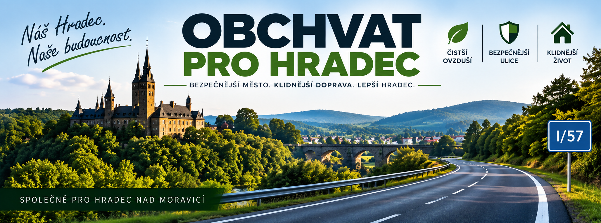

🛡️
Bezpečnější ulice
Méně tranzitní dopravy v obytném území znamená lepší podmínky pro chodce, cyklisty i místní dopravu.

Chceme, aby se otázka přeložky silnice I/57 z plánů posunula ke konkrétním krokům. Věcně, veřejně a s ověřitelnými podklady.
Oficiální ePetice je zveřejněna na Portálu občana. Podpis probíhá bezpečně prostřednictvím státní služby.
Úvodní grafika je ilustrační a nezobrazuje navrhovanou trasu obchvatu.
Silnice I/57 dnes prochází obytným územím Hradce nad Moravicí a Kajlovce. Současný územní plán města přitom výslovně navrhuje její přeložení do nové obchvatové polohy, aby byla průjezdná doprava z dnešního průtahu převedena na obchvat.
Naším cílem není slibovat termín stavby ani kreslit vlastní trasu. Chceme zjistit skutečný stav přípravy a prosadit, aby odpovědné instituce stanovily konkrétní další kroky.
Méně tranzitní dopravy v obytném území znamená lepší podmínky pro chodce, cyklisty i místní dopravu.
Cílem je otevřít seriózní debatu o dlouhodobém odlehčení centra a obytných částí města.
Nechceme obecné fráze. Chceme vědět, co existuje, co chybí, kdo je odpovědný a jaký je další krok.
Jaké podklady k přeložce I/57 dnes existují a v jaké fázi se projekt nachází?
Jasně popsat role města, Moravskoslezského kraje, ŘSD a Ministerstva dopravy.
Určit reálný následující krok přípravy, nikoli jen obecný příslib do budoucna.
Vývoj projektu a odpovědi institucí zveřejňovat tak, aby byly dostupné každému.
Územní plán Hradce nad Moravicí navrhuje přeložit silnici I/57 do nové obchvatové polohy a převést na ni průjezdnou dopravu z dnešního průtahu Hradcem a Kajlovcem.
Otevřít zdroj ↗Zásady územního rozvoje Moravskoslezského kraje vedou záměr „I/57 Hradec nad Moravicí, přeložka“ pod označením DZ4. Záměr tedy není novou myšlenkou této iniciativy – má oporu v územně plánovací dokumentaci.
Otevřít zdroj ↗Na této stránce budeme oddělovat potvrzená fakta, naše požadavky a dosud nezodpovězené otázky. Dokumenty a odpovědi institucí zveřejníme.
Nezačínáme od nuly. Přeložka I/57 se objevuje v územně plánovacích podkladech. Naším cílem je srozumitelně zjistit a zveřejnit, co už bylo připraveno, co dnes platí a jaký konkrétní krok musí následovat.
Pro obchvat Hradce byly v minulosti prověřovány varianty a vznikly podklady, ze kterých následně vycházelo územní plánování.
Zásady územního rozvoje Moravskoslezského kraje evidují záměr DZ4 – I/57 Hradec nad Moravicí, přeložka.
Ověřit v dokumentaci ↗Územní plán města navrhuje přeložit I/57 do nové obchvatové polohy a převést na ni průjezdnou dopravu z dnešního průtahu Hradcem a Kajlovcem.
Ověřit v územním plánu ↗Samotné zanesení záměru do plánů ještě neznamená realizaci. Proto chceme od odpovědných institucí zjistit aktuální stav přípravy, existující podklady, odpovědnost a reálný následující krok.
Právě tady začíná iniciativa Obchvat pro Hradec.Po získání oficiálních odpovědí je zveřejníme zde. Web tak bude průběžně ukazovat, co se skutečně posunulo a co stále čeká na řešení.
Důležité: Iniciativa neurčuje vlastní trasu ani neslibuje termín stavby. Požaduje transparentní pokračování odborné a institucionální přípravy.
Ne. „Obchvat pro Hradec“ je občanská iniciativa zaměřená na konkrétní dopravní téma. Nejde o oficiální stránku města, kraje ani ŘSD.
Ne. Trasa a technické řešení musí vycházet z územního plánování, odborných studií a zákonných procesů. Iniciativa požaduje především transparentní a konkrétní postup přípravy.
Petice je zveřejněna na oficiálním Portálu občana. Přejít k ePetici a podepsat ↗
Ano. Smyslem projektu je, aby veřejnost měla na jednom místě dostupné zdroje, odpovědi a aktualizace.
Další dokumenty doplníme po rešerši a po obdržení odpovědí od institucí.
Podpořte iniciativu podpisem oficiální ePetice a sledujte další vývoj projektu.